Displaying the Time series

- Rejected my own work - Slider would not work with >160 months of satellite data
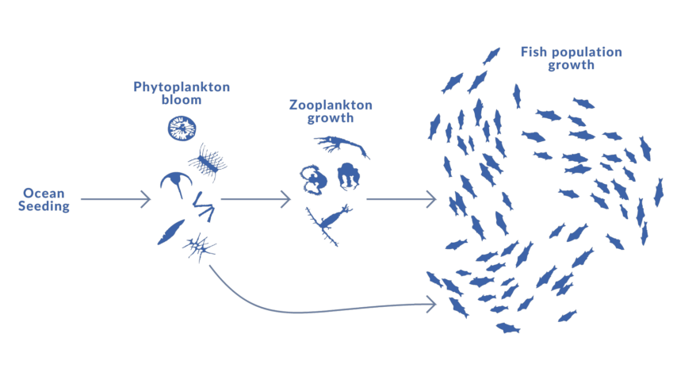
Adding nutrients to a depleted marine ecosystem.
| 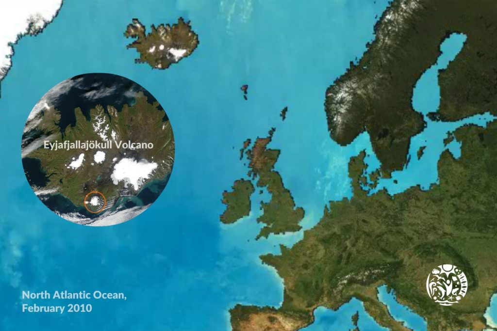 | 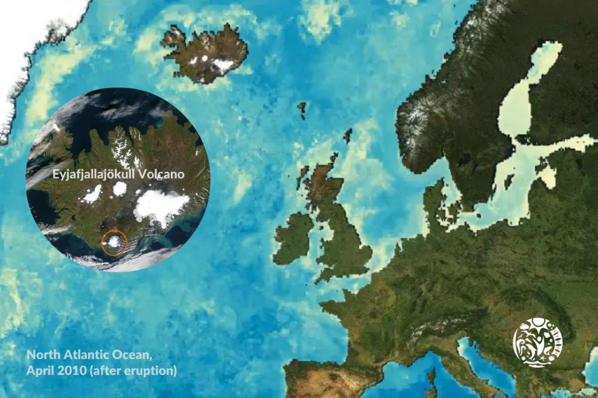 |
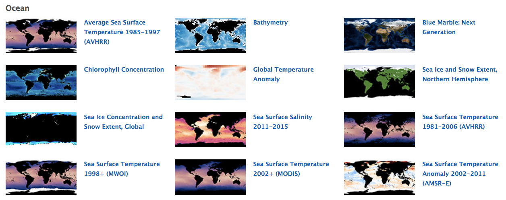
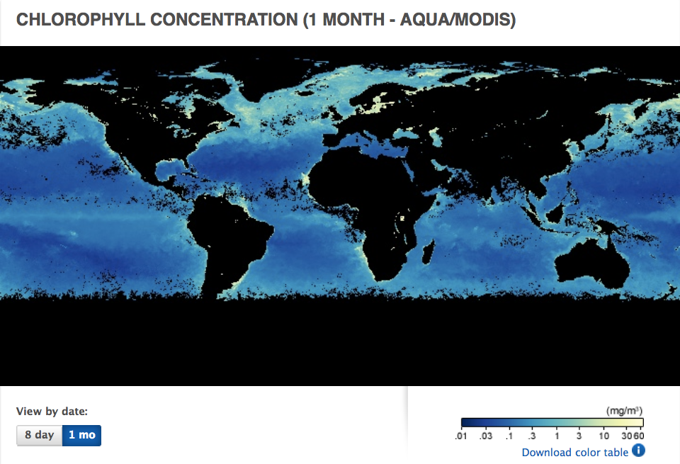
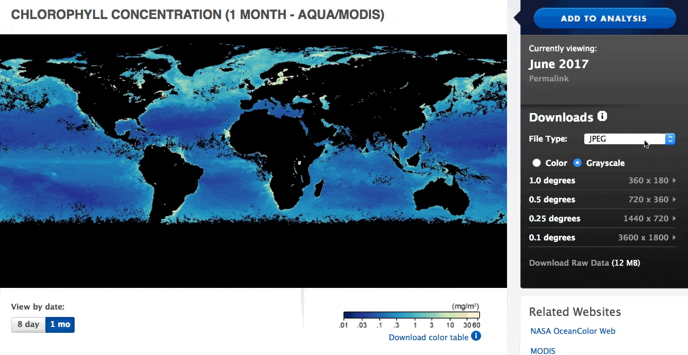
NEO Data Available
180 months
650 8-day periods
gdal2tiles.py to Tile 0.1° GeoTIFFs
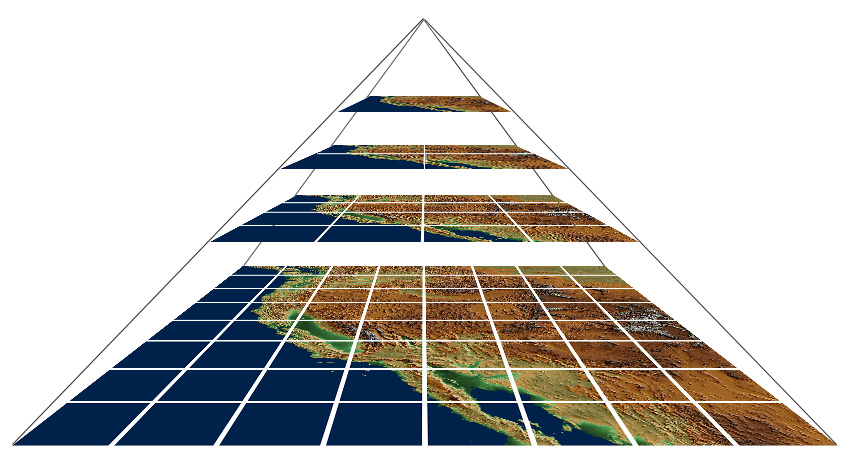
gdal_translate -of vrt file.tif out.vrt
gdal2tilesp.py -z 0-6 -f PNG out.vrt out
mbtiles to Mapbox.cominpaint| 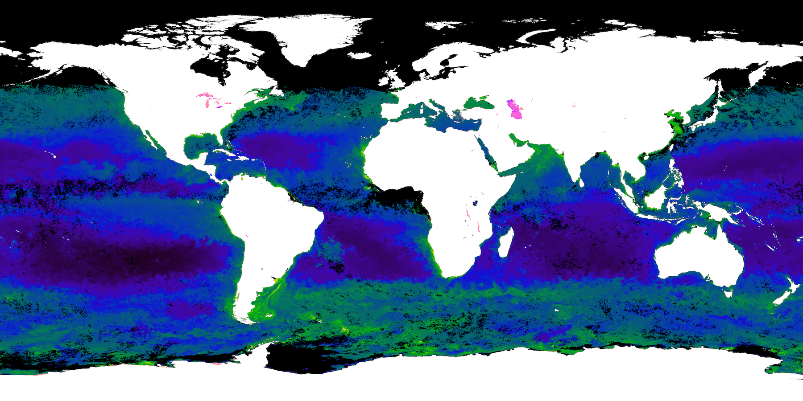 | 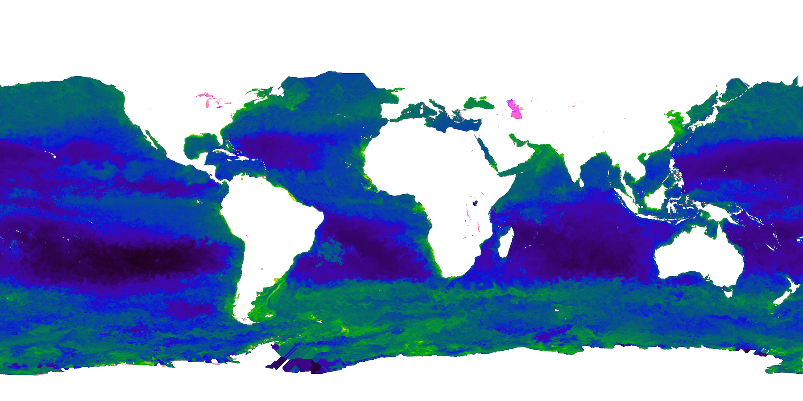 |
gmic kindlmann-MY1DMM_CHLORA_2016-01.tif -to_colormode 3 \
bathy.3600x1800.threshold.png \
-blend xor \
--select_color[0] 0,0,0,0 \
-inpaint[0] [1],0 \
-o result.png
gmic.eu
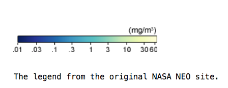
gdal2tiles.py| 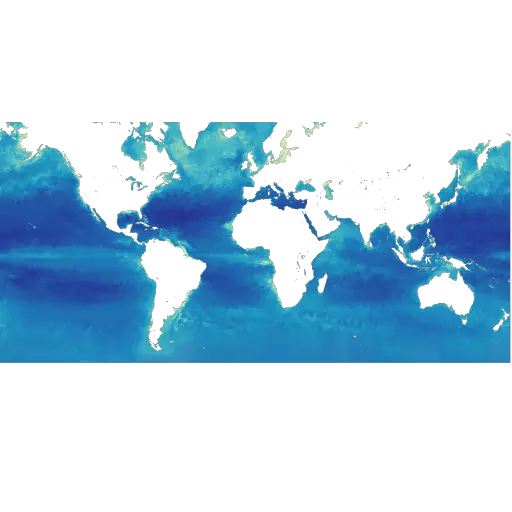 | 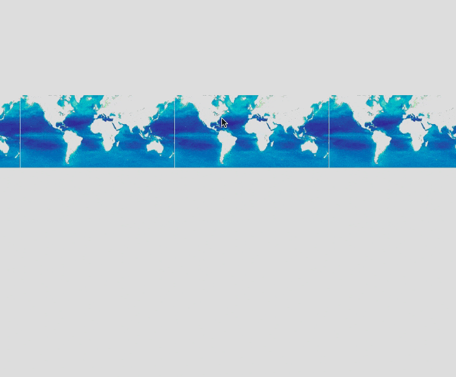 |
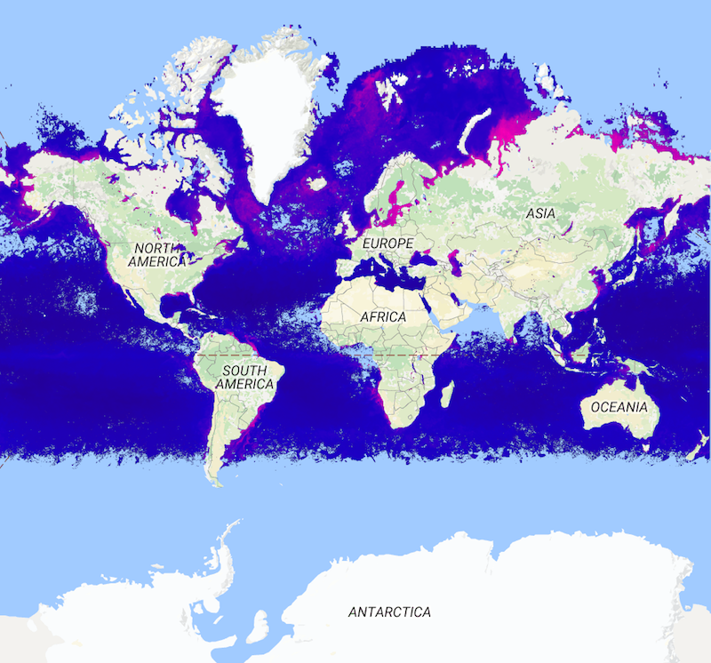
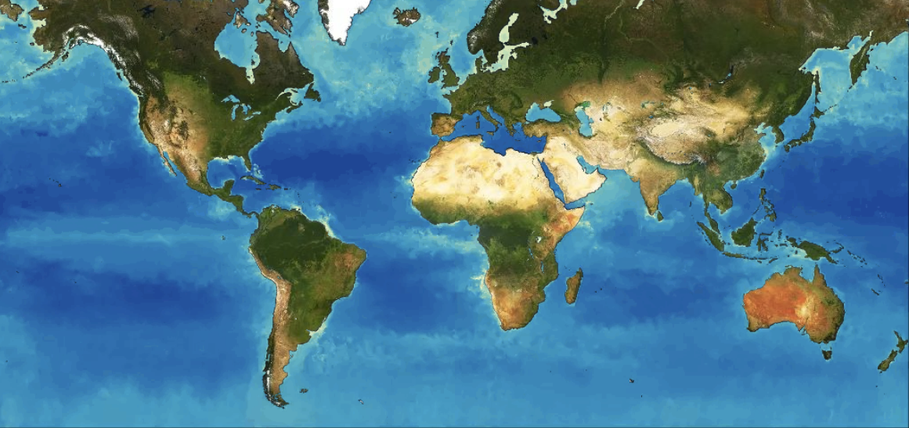
Done once ... now scale
MBTile to Mapbox.com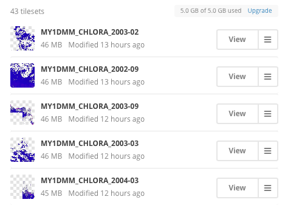
GDAL drivers to the rescue
WebP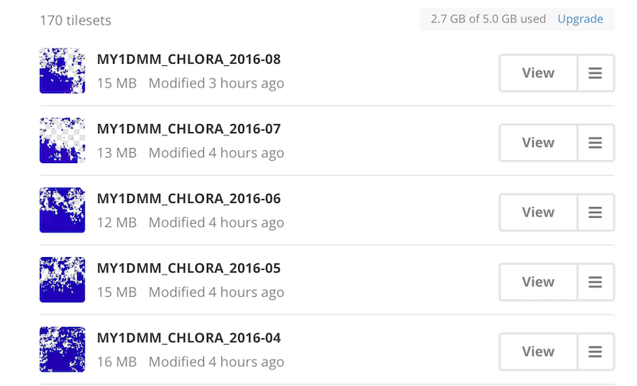
WebP driver in GDAL to compress the data even smallerWebP tiles are ~1/3 the size of PNG tiles (~15 MB vs. ~45 MB per month)float = gdal.Open('MY1DMW_CHLORA_2016-09-05.FLOAT.TIFF')
f = numpy.array(float.GetRasterBand(1).ReadAsArray())
grid = numpy.meshgrid(f)
# Extract chlorophyll less than 1.0
t = numpy.less (grid , 1.0)
choice = numpy.logical_and(t , grid)
lowPlankton = numpy.extract(choice, grid)
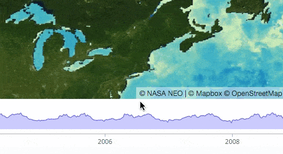
Plot.ly
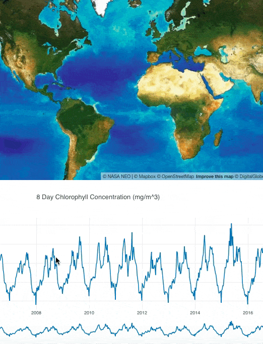
gdal2tiles.pygdal2tilesp.py — parallel processing, https://github.com/roblabs/gdal2tilespWebP driver — http://developers.google.com/speed/webp
mb-util for packing mbtiles, https://github.com/mapbox/mbutilmapbox CLI for uploading mbtiles, https://github.com/mapbox/mapbox-cli-py
| 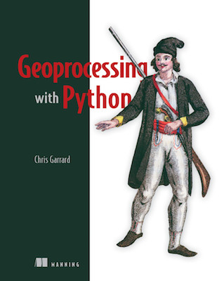 |
Chris Garrard, Geoprocessing With Python, https://manning.com/books/geoprocessing-with-python
Python GDAL/OGR Cookbook, https://pcjericks.github.io/py-gdalogr-cookbook/
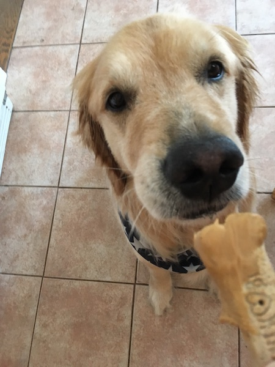
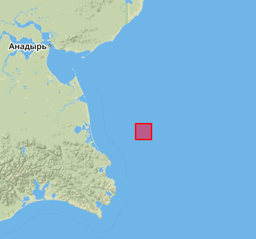